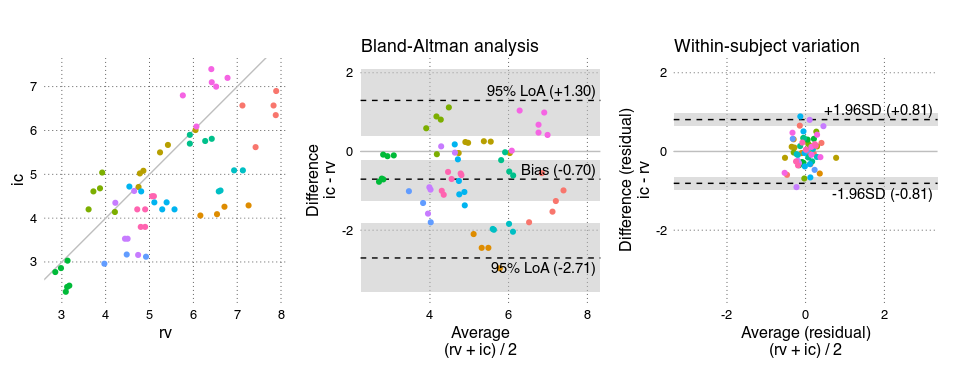

A package for conveniently conducting a Bland-Altman including assessment of trending ability.
Installation
You can install BAtrending from GitHub with:
# install.packages("pak")
pak::pak("JohannesNE/BAtrending")or
devtools::install_github("JohannesNE/BAtrending")Example
BAtrending package includes a small sample dataset, CO. It contains paired measurements of cardiac output (CO) with two methods: radionuclide ventriculography (rv) and impedance cardiography (ic). The dataset was published in Bland JM, Altman DG. (1999) Measuring agreement in method comparison studies. Statistical Methods in Medical Research 8, 135-160.
The CO dataset has 60 measurements in 12 subjects.
library(BAtrending)
BA_CO <- compare_methods(CO, ref_col = "rv", alt_col = "ic", id_col = "sub")
# Bootstrap confidence intervals
BA_CO <- add_confint(BA_CO)
BA_plot_combine(BA_CO, aspect_ratio = 1)
The object (BA_CO) returned by compare_methods() contains a number of parameters from both the standard Bland-Altman analysis and for assessing trending ability. The print() method gives an overview:
BA_CO
#> 60 paired measurements in 12 subjects
#>
#> est [95% CI]
#> === Distribution ===
#> Mean : 5.035 [ 4.362; 5.748]
#> Between-subject variation (SD) : 1.210 [ 0.712; 1.703]
#> Within-subject variation (SD) : 0.283 [ 0.225; 0.340]
#> Total variation (SD) : 1.243 [ 0.767; 1.726]
#>
#> === Method comparison ===
#> Bias (alt - ref) : -0.705 [-1.251; -0.207]
#> Between-subject variation (SD) : 0.934 [ 0.541; 1.305]
#> Within-subject variation (SD) : 0.413 [ 0.332; 0.497]
#> Total variation (SD) : 1.022 [ 0.674; 1.369]
#> Intraclass correlation
#> └ Between/Total variance : 0.836 [ 0.625; 0.919]
#> Limits of agreement (95%)
#> ├ Upper limit : 1.298 [ 0.398; 2.094]
#> └ Lower limit : -2.707 [-3.567; -1.816]
#> Percentage error : 0.398 [ 0.263; 0.534]
#>
#> --- Trending ---
#> Within-subject perc. error : 0.161 [ 0.129; 0.194]
#> Change LoA [±] (95%) : 1.146 [ 0.919; 1.378]Citation
citation("BAtrending")To cite package ‘BAtrending’ in publications use:
YourLastName Y, CoauthorLastName C (2023). “BATrending paper.” Journal of Important Research, 10(2), 123-456. doi:10.xxxx/your.paper.doi.here https://doi.org/10.xxxx/your.paper.doi.here.
A BibTeX entry for LaTeX users is
@Article{, title = {BATrending paper}, author = {YourFirstName YourLastName and CoauthorFirstName CoauthorLastName}, journal = {Journal of Important Research}, year = {2023}, volume = {10}, number = {2}, pages = {123–456}, doi = {10.xxxx/your.paper.doi.here}, }
Please also cite the ‘lme4’ package, upon which ‘BAtrending’ relies heavily. See citation("lme4").